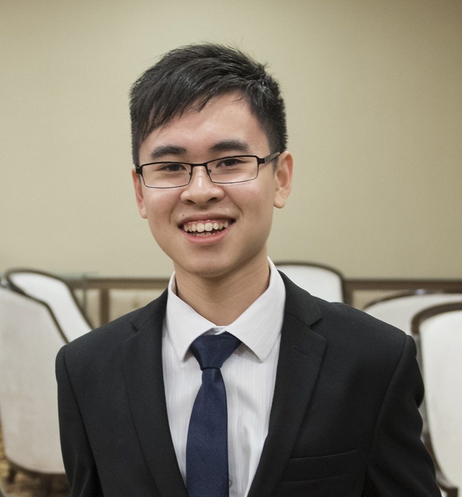

About Me

Ooi Ji Young12 October 1997
jiyoung.ooi@sd.taylors.edu.my
Ooi Ji Young | @ooijiyoung
Ooi Ji Young | ojy_97
Diploma in Information Technology
Education
Taylor's University (July 2016 - Current) - Diploma In Information Technology
INTI International College Penang (Jan 2015 – July 2016)
- American Degree Transfer Programme
Chung Ling High School Penang (Jan 2010 – Dec 2014)
- Graduated 2014 - Science Stream
- Assistant Monitor 2012
- Monitor 2013,2014
- Form 5 Graduation Magazine committee 2014
Experiences
Web Design - HTML/CSSGraphic Design - Flyer/Poster Design
- 2016 Penang Heart-Safe Programme (Mass CPR-AED Training 2016) (click to view)
- 2015 CPR Guidelines Update Symposium (click to view)
Taylor's University COM40103 Creative Communication & Portfolio Development, Individual Assignment.

Copyright © 2016 JYDesign Studios by Ooi Ji Young.
Copyright © 2016 JYDesign Studios by Ooi Ji Young.